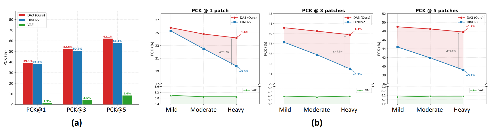
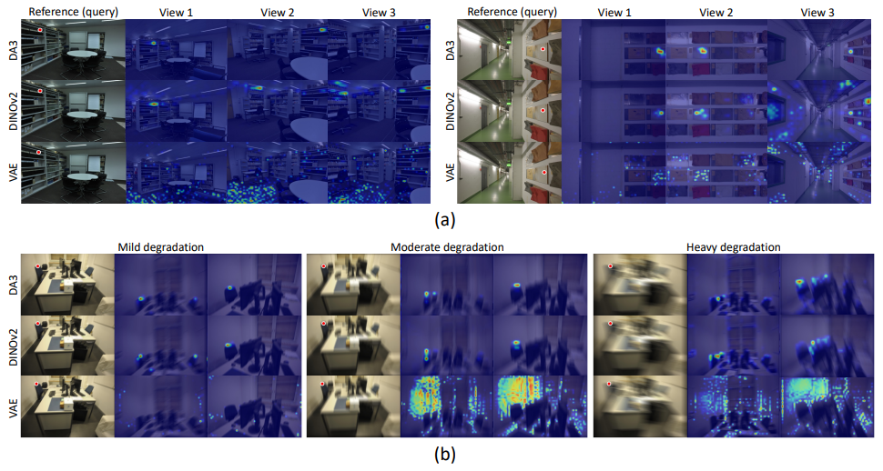

GARD: Geometry-Aware Representation Denoisingfor Robust Multi-view 3D Reconstruction

We propose Geometry-Aware Representation Denoising (GARD), a novel framework that performs diffusion-based multi-view restoration directly in the feature space of a feed-forward 3D reconstruction model, enabling simultaneous recovery of 3D scene geometry and high-quality RGB images from degraded multi-view inputs. Our method outperforms existing pixel-space and VAE-based latent-space restoration approaches, demonstrating the effectiveness of geometry-aware feature denoising for robust multi-view 3D reconstruction.
Pixel-Space and VAE-Based Restoration Fall Short for 3D Reconstruction

Feed-forward 3D reconstruction models perform well under clean conditions, but fail under real-world degradations such as motion blur.
Where should restoration happen?
⚠️ Pixel-space restoration: Applying a pixel-space denoiser independently to each view fails to leverage multi-view information and cannot enforce cross-view geometry consistency during restoration. This often leads to view-dependent artifacts and inconsistencies that propagate to the reconstructor, resulting in impaired geometry estimation performance.
⚠️ Multi-view restoration in VAE-based latent space: Restoration in compressed VAE-based latent space can introduce an information bottleneck, discarding fine-grained details and high-frequency structures essential for accurate multi-view correspondence and 3D reconstruction.
💡 GARD: Perform denoising directly in the geometry-aware feature space of a feed-forward reconstructor, preserving both cross-view consistency and visual detail, making it more suitable for restoration than pixel space or compressed VAE latents.
Overall Framework

(a) GARD Framework: The GARD denoiser is learned within the representation space of a frozen multi-view encoder to restore degraded intermediate representations into restored representations before they are propagated through the remaining encoder layers. The restored representations are then decoded by their respective decoders to produce geometry predictions and restored RGB images.
(b) GARD Denoiser Training: The GARD denoiser is optimized using an interpolated flow matching loss together with an attention alignment loss, which jointly learns the mapping from degraded to clean feature representations while preserving geometric consistency through explicit alignment of attention maps.
(c) GARD Denoiser Architecture: The GARD denoiser adopts a multi-view latent diffusion architecture, comprising a DDT encoder and a DDT wide decoder, with global attention layers inserted to enable multi-view modeling, thereby facilitating global context aggregation and reconstruction of high-dimensional multi-view representations.
Geometry-Aware Feature Analysis

We evaluate the PCK accuracy of three feature cost volumes under two experimental settings to validate the effectiveness of our proposed denoising space. DA3 features preserve geometric structure more effectively than VAE and DINOv2, achieving higher keypoint correspondence accuracy and stronger robustness to degradation, making them well-suited for representation-level denoising and downstream 3D reconstruction.

DA3: Produce the sharpest and most geometrically consistent correspondences across views under both clean and degraded conditions.
DINOv2: Achieves reasonably accurate matching with less precise and less stable response regions.
VAE: Exhibit highly scattered and ambiguous correspondences under both clean and degraded conditions, reflecting limited geometry-aware representation quality caused by heavy latent compression.
DA3 > DINOv2 ≫ VAE in correspondence accuracy and robustness, maintaining strong geometric consistency as degradation increases.
Quantitative Results
| Method | HiRoom | ETH3D | DTU | 7Scenes | ScanNet++ |
|---|---|---|---|---|---|
HQ Input | 96.65 | 84.68 | 98.70 | 86.91 | 92.95 |
LQ Input | 32.90 | 61.38 | 66.43 | 51.39 | 71.02 |
Restormer | 26.68 | 57.68 | 67.80 | 75.12 | 76.12 |
HI-Diff | 16.02 | 52.56 | 51.13 | 52.72 | 71.61 |
InstructIR | 27.68 | 53.80 | 85.91 | 74.22 | 68.23 |
MoCE-IR | 28.60 | 63.25 | 84.61 | 65.20 | 72.99 |
VRT | 30.17 | 58.98 | 67.01 | 48.02 | 72.67 |
FMA-Net | 18.29 | 53.81 | 40.62 | 38.23 | 55.40 |
VAEMVD | 28.70 | 35.20 | 60.50 | 76.50 | 75.00 |
GARD (Ours) | 67.22 | 74.68 | 92.37 | 84.73 | 87.45 |
| Method | HiRoom | ETH3D | DTU (Overall ↓) | 7Scenes | ScanNet++ |
|---|---|---|---|---|---|
HQ Input | 84.05 | 60.81 | 2.475 | 45.15 | 50.25 |
LQ Input | 11.74 | 37.50 | 6.611 | 18.40 | 24.13 |
Restormer | 11.21 | 33.97 | 7.272 | 27.92 | 30.45 |
HI-Diff | 8.07 | 35.10 | 7.758 | 25.92 | 25.83 |
InstructIR | 12.41 | 33.71 | 5.563 | 29.80 | 26.06 |
MoCE-IR | 10.62 | 37.15 | 6.120 | 26.31 | 25.97 |
VRT | 9.45 | 35.14 | 7.570 | 19.53 | 26.72 |
FMA-Net | 9.61 | 35.65 | 7.415 | 13.37 | 19.66 |
VAEMVD | 11.26 | 25.64 | 7.745 | 28.16 | 28.38 |
GARD (Ours) | 18.25 | 45.79 | 4.760 | 36.08 | 35.77 |
| Method | HiRoom | ETH3D | DTU | 7Scenes | ScanNet++ |
|---|---|---|---|---|---|
Restormer | 17.49 | 20.97 | 17.73 | 21.30 | 21.50 |
HI-Diff | 17.35 | 20.45 | 17.39 | 19.82 | 20.68 |
InstructIR | 17.51 | 20.93 | 20.38 | 20.93 | 21.15 |
MoCE-IR | 17.69 | 21.00 | 20.38 | 20.60 | 21.19 |
VRT | 17.47 | 20.82 | 17.61 | 19.79 | 20.83 |
FMA-Net | 17.14 | 20.65 | 17.13 | 18.84 | 19.98 |
VAEMVD | 19.76 | 21.37 | 20.54 | 21.74 | 21.19 |
GARD (Ours) | 21.89 | 21.88 | 21.25 | 22.67 | 22.19 |
| Method | HiRoom | ETH3D | DTU | 7Scenes | ScanNet++ |
|---|---|---|---|---|---|
HQ Input | 99.4 | 99.7 | 95.2 | 93.7 | 97.5 |
LQ Input | 78.6 | 90.4 | 94.5 | 81.9 | 89.5 |
Restormer | 74.1 | 82.2 | 94.6 | 85.0 | 89.1 |
HI-Diff | 70.2 | 86.3 | 93.8 | 82.2 | 89.2 |
InstructIR | 71.7 | 81.3 | 95.0 | 83.3 | 83.4 |
MoCE-IR | 76.8 | 88.3 | 95.6 | 84.5 | 89.6 |
VRT | 77.9 | 90.2 | 94.7 | 80.5 | 89.8 |
FMA-Net | 70.8 | 88.0 | 94.1 | 76.8 | 85.5 |
VAEMVD | 80.2 | 95.4 | 95.9 | 89.0 | 93.2 |
GARD (Ours) | 97.2 | 98.4 | 96.1 | 92.7 | 96.7 |
GARD achieves the best performance across all datasets on pose estimation, 3D reconstruction, and image restoration, demonstrating that restoring in a geometry-aware feature space preserves both structural fidelity and cross-view consistency.
Qualitative Results
1. Pose Estimation
2. 3D Reconstruction
3. Image Restoration
4. Depth Estimation
Restoring directly in a geometry-aware feature space preserves both visual fidelity and cross-view consistency, leading to sharper images, more accurate geometry, and improved downstream 3D understanding.
Citation
@misc{kim2026geometryawarerepresentationdenoisingrobust,
title={Geometry-Aware Representation Denoising for Robust Multi-view 3D Reconstruction},
author={Jin Hyeon Kim and Jaeeun Lee and Claire Kim and Kyoungjin Oh and Paul Hyunbin Cho and Jaewon Min and Yeji Choi and Jihye Park and Hyunhee Park and Minkyu Park and Seungryong Kim},
year={2026},
eprint={2605.26230},
archivePrefix={arXiv},
primaryClass={cs.CV},
url={https://arxiv.org/abs/2605.26230},
}